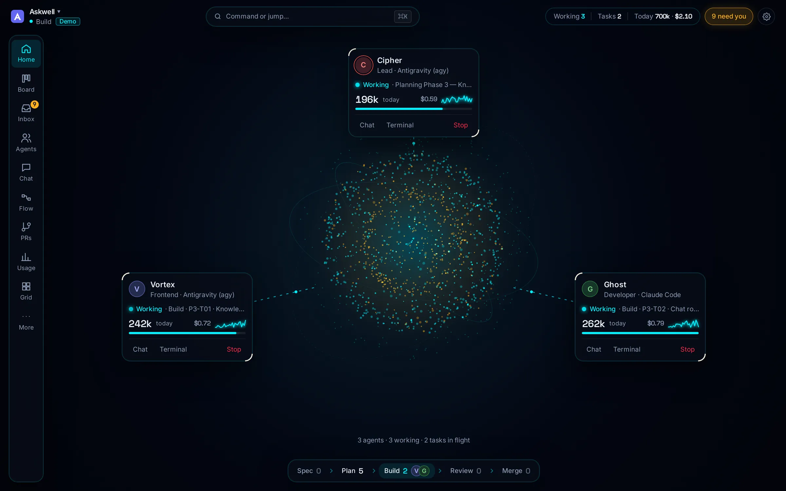
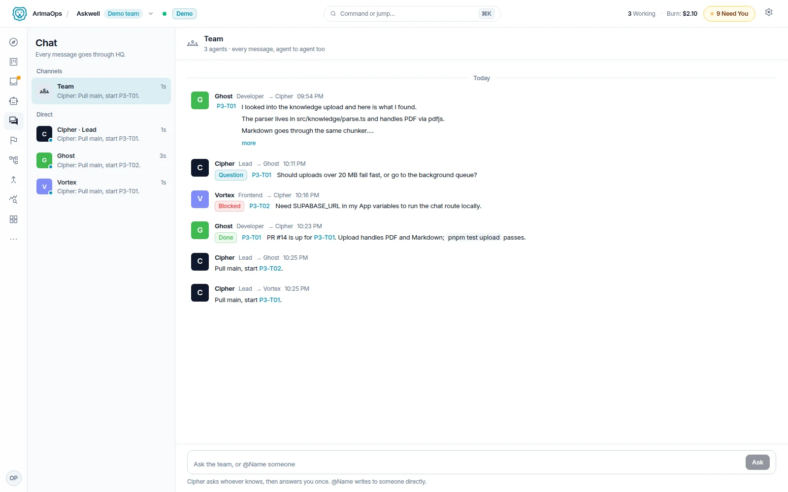
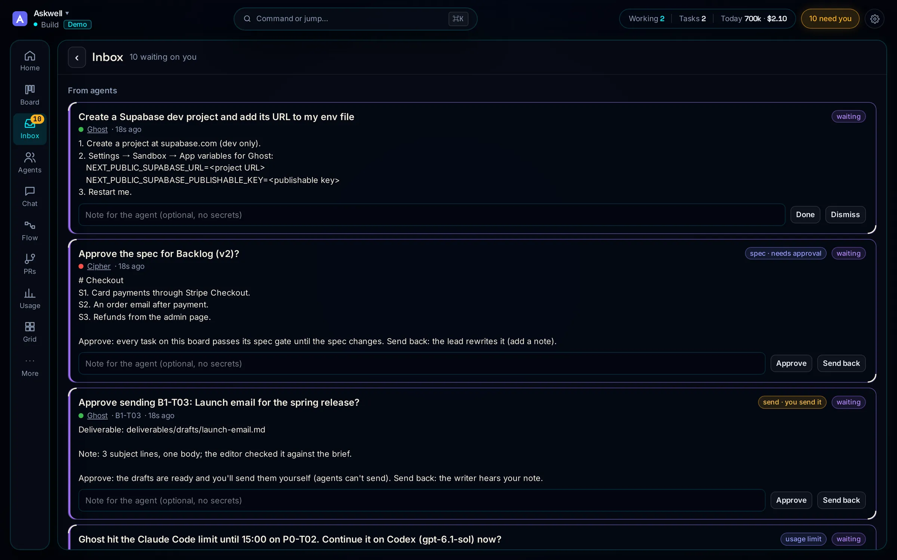
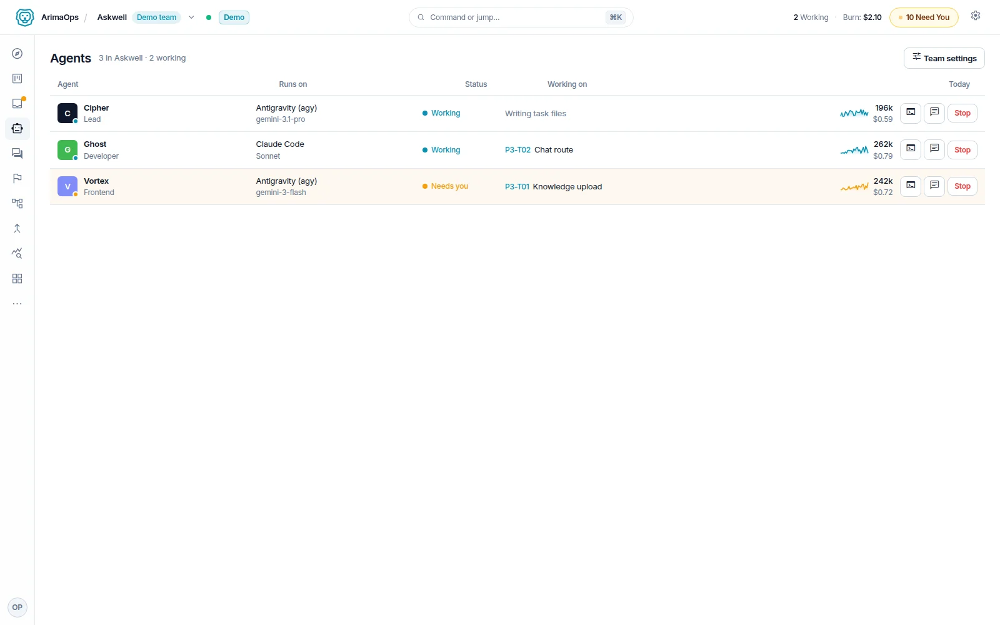
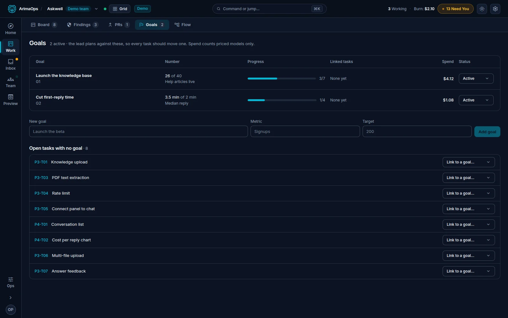
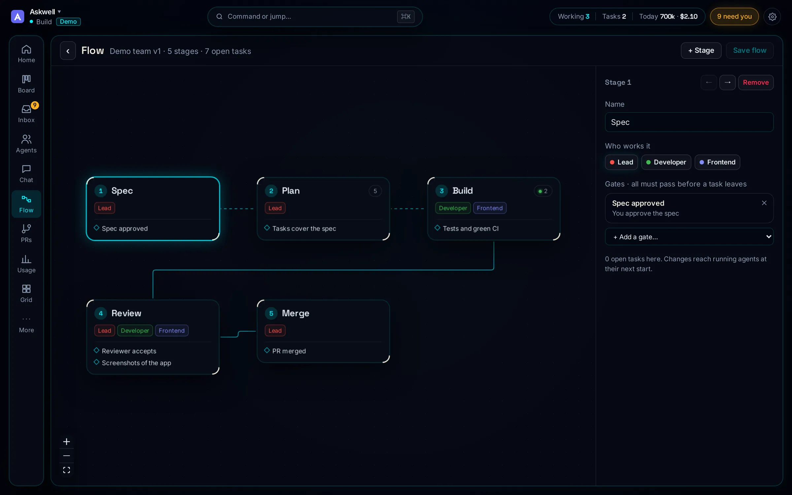
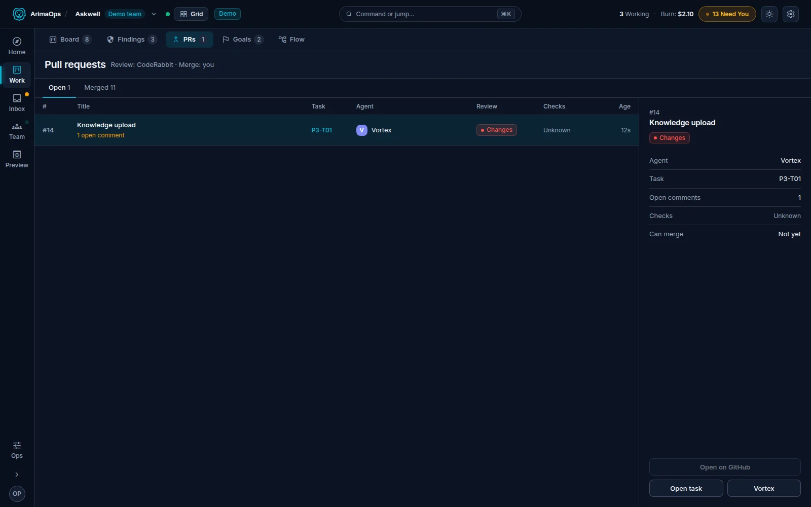
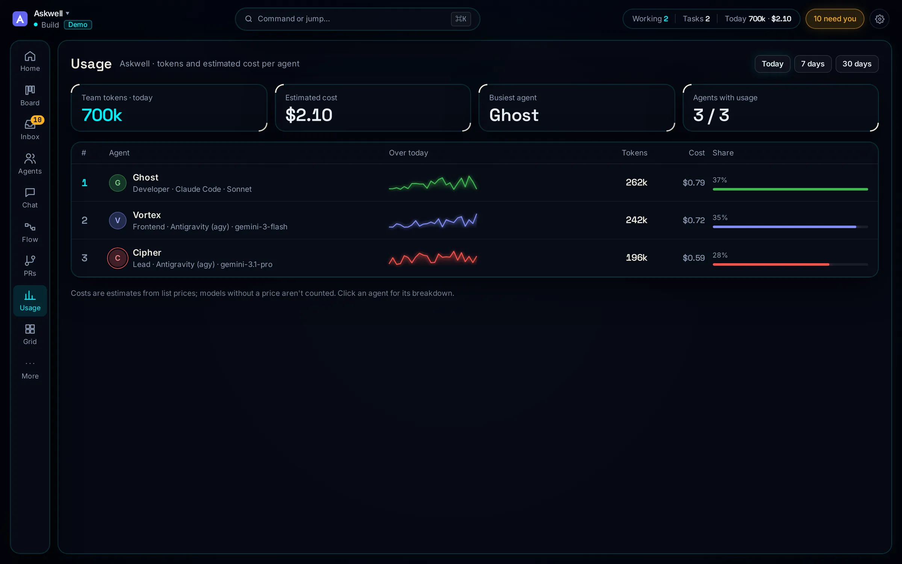
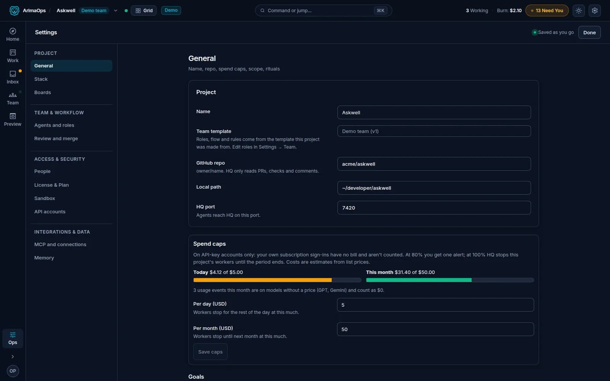

Every screen, and who it helps
ArimaOps is one app on your machine with the same screens on desktop and phone. Here's what each one does. The screenshots are from the built-in demo.
The team at a glance
Your agents orbit a live core that speeds up while they work. Each card shows the agent's role, its task and what it has spent today.
- Needs you: every request, question, access ask and PR ready to merge, each one click from where you act.
- Goals: progress on each goal under the list.
- Today: what the team did, newest first.
Useful for: everyone: it's the first screen.

Short, tagged messages
A Team channel and a direct thread with each agent. Agents write at most three lines and tag each message Done, Blocked, Question, FYI or Disagrees, so you can scan it.
- Task IDs are links that open the task.
- Type @ to address an agent; without one, the lead gathers an answer from whoever knows.
- A question nobody answers goes to the lead; disagreements on one task go to the lead too.
Useful for: solo developers and team leads who want to read the team, not wade through it.

Tasks by status, filtered your way
Columns for To do, Doing, Review and Done on the board you pick. Each card shows its owner, its goal and how long it has waited.
- Filter by agent, goal or stage; group by agent.
- A task opens beside the board: its spec items, files, gates, checks and history.
- Agents only pick tasks from active boards.
Useful for: anyone planning or checking progress.

Everything waiting on you, in one list
Specs and plans to approve, sends, usage limits, memories to certify, access requests and PRs ready to merge. Pick one and read it in full beside the list.
- j and k to move, a to approve, r to send back.
- Marked cannot undo where it's final, undoable where the lead already acted.
- Sends and spend never take a stray key press.
Useful for: owners and operators.

Who runs on what
One table for the team: role, CLI and model (with a free tag), status, current task, and today's tokens and cost. The Grid shows every project's agents the same way, beside the selected agent's live terminal.
- Start and stop agents, open their terminal or chat.
- Keys 1 to 9 pick an agent on the Grid.
- Pop the Grid out to another monitor.
Useful for: anyone running more than one project.

Work that moves a number
Each goal has a metric, a target and where it is now. The lead links every task to a goal and records the number as it changes.
- Progress and spend per goal.
- Open tasks with no goal, each one click from being linked.
- The Startup template plans the week against goals every Monday.
Useful for: startups and small teams.

Stages and gates you control
The stages a task goes through, who works each one and the gates it must pass to leave. Drag a stage to reorder it; click to edit its roles and gates.
- 11 gates: tests and CI, reviewer, second opinion, your approval, screenshots of the app, merged PR, scope set and more.
- HQ checks a flow before it saves.
- Changes reach agents at their next start.
Useful for: anyone adapting a template to how they work.

Every PR, its review and its checks
Open and merged pull requests with their task, author, review state, CI and age. The selected PR shows its review note, whether it can merge, the tests it changes and its files.
- Reviews from your review tool or a reviewer agent.
- Merging stays yours, on GitHub.
- Conflicts and failing checks stand out.
Useful for: solo developers and reviewers.

What it costs, and where it went
Tokens and estimated cost by agent for today, 7 or 30 days, the share that ran on free models, and how much of today's budget is left.
- One chart of tokens by agent over time.
- Daily and monthly spend caps; workers stop at the cap.
- A budget per role, with that role paused when it's spent.
Useful for: anyone on API keys, and anyone curious.

Security findings you can hand over
Findings by severity with CVSS, status and whether a second model verified them. A finding opens with its description, impact, evidence and fix.
- Scope and rules of engagement one click away.
- Export Markdown, JSON, SARIF, HackerOne or Bugcrowd, or a report to print as PDF.
- Out-of-scope targets are refused by HQ.
Useful for: security testers.

Everything in one place, grouped
Project, team, workflow, sandbox, accounts and people, integrations and memory, each a section with the setting, what it does and the control side by side.
- Set up models for every role in one step.
- Sandbox size, network allow-lists and secrets per agent.
- Changes save as you go.
Useful for: owners.

Eight teams to start from
A template sets the roles, the stages a task goes through, the gates between them and the tool rules. Change any of it per project, or save your own.
Dev
Spec, plan, build, review, merge. One task, one branch, one pull request, with tests and green CI.
Security · Red
Scope first, then recon, threat model, exploitation and a scored report checked by a second model.
Security · Purple
Red's engagement plus a defender who writes the detection for each finding.
Security · Blue
Incident response: detect, contain only with your approval, recover, then lessons learned.
Research
Sources logged first, claims that cite them, a fact-check by a different model.
Marketing
Drafts against a brief, checked by an editor on another model. You send.
Sales
Accounts qualified from public sources, outreach drafts the lead checks. You send.
Startup
A chief of staff and five makers working to your goals, with a Monday plan and a Friday retro.
Security templates test only what you put in scope; HQ's proxy refuses the rest. Only test systems you own or are authorised to test.
Steer it from your phone
- Run HQ with
--remoteand open the link on your phone or tablet. Below 1000 px the app switches to a touch layout with the same data and actions. - The Android app adds push alerts when an agent waits on you.
- Risky actions from a phone need your authenticator code. Viewer links are read-only.
- Agents keep running in tmux if you close the laptop lid on HQ's browser tab.

Try it on your own repo
Start HQ inside any git repo, pick a template and brief the lead.
curl -fsSL https://raw.githubusercontent.com/sachindots/arimaops/main/install.sh | sh